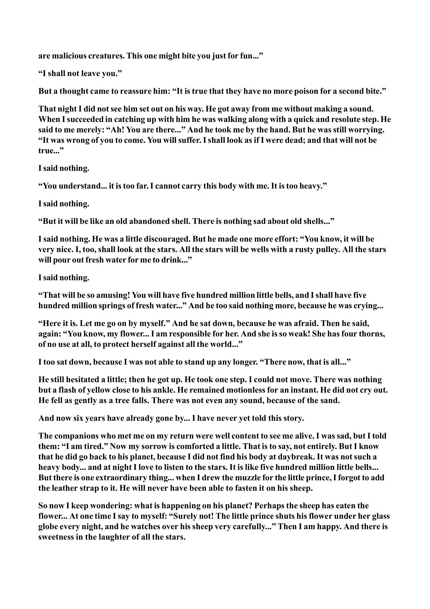

are malicious creatures. This one might bite you just for fun...” “I shall not leave you.” But a thought came to reassure him: “It is true that they have no more poison for a second bite.” That night I did not see him set out on his way. He got away from me without making a sound. When I succeeded in catching up with him he was walking along with a quick and resolute step. He said to me merely: “Ah! You are there...” And he took me by the hand. But he was still worrying. “It was wrong of you to come. You will suffer. I shall look as if I were dead; and that will not be true...” I said nothing. “You understand... it is too far. I cannot carry this body with me. It is too heavy.” I said nothing. “But it will be like an old abandoned shell. There is nothing sad about old shells...” I said nothing. He was a little discouraged. But he made one more effort: “You know, it will be very nice. I, too, shall look at the stars. All the stars will be wells with a rusty pulley. All the stars will pour out fresh water for me to drink...” I said nothing. “That will be so amusing! You will have five hundred million little bells, and I shall have five hundred million springs of fresh water...” And he too said nothing more, because he was crying... “Here it is. Let me go on by myself.” And he sat down, because he was afraid. Then he said, again: “You know, my flower... I am responsible for her. And she is so weak! She has four thorns, of no use at all, to protect herself against all the world...” I too sat down, because I was not able to stand up any longer. “There now, that is all...” He still hesitated a little; then he got up. He took one step. I could not move. There was nothing but a flash of yellow close to his ankle. He remained motionless for an instant. He did not cry out. He fell as gently as a tree falls. There was not even any sound, because of the sand. And now six years have already gone by... I have never yet told this story. The companions who met me on my return were well content to see me alive. I was sad, but I told them: “I am tired.” Now my sorrow is comforted a little. That is to say, not entirely. But I know that he did go back to his planet, because I did not find his body at daybreak. It was not such a heavy body... and at night I love to listen to the stars. It is like five hundred million little bells... But there is one extraordinary thing... when I drew the muzzle for the little prince, I forgot to add the leather strap to it. He will never have been able to fasten it on his sheep. So now I keep wondering: what is happening on his planet? Perhaps the sheep has eaten the flower... At one time I say to myself: “Surely not! The little prince shuts his flower under her glass globe every night, and he watches over his sheep very carefully...” Then I am happy. And there is sweetness in the laughter of all the stars.
